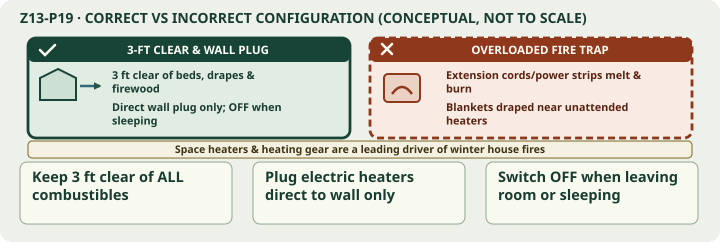

Z13-P19 · Home survival and utilities · New manuscript
Enforce the 3-foot clearance rule for space heaters and fireplaces
Prevent residential heating fires—the second leading cause of U.S. home fires—by keeping combustibles physically isolated from heat sources.
When it applies · Electric space heaters, properly installed fireplaces, wood stoves, and utility-approved supplemental heaters.
Equipment · UL/NRTL-listed heater with automatic tip-over and overheat shutoff, rigid 3-foot clearance boundary, and working smoke/CO alarms.

Actions
- Maintain at least a full 3-foot kid-free and pet-free clearance zone around EVERY space heater, wood stove, fireplace, or baseboard heater—keeping bedding, curtains, rugs, firewood stacks, cardboard, and drying laundry completely outside that perimeter.[U03, U04]
- Plug portable electric space heaters DIRECTLY into a solid wall receptacle (NEVER into extension cords or power strips, which melt and ignite), place them on flat hard floors, and turn them completely OFF whenever leaving the room or going to sleep.[U03, U04]
- Inspect heater cords for fraying or hot plugs before every winter season and verify working smoke alarms on every floor.[U03, U04, U12]
Failure recognition · Plugging a 1,500-watt electric space heater into a thin extension cord next to a sofa throw blanket overnight.[U03, U04]
Verify · Confirm 3-foot clear radius around all sides, direct wall plug only, tip-over shutoff present, and heaters turned off before sleep.[U03]
Stop or change course · Hot wall outlet, tripped breaker, tip-over damage, or scorching smell requires unplugging immediately and inspecting before any reuse.[U03, U04]
Evidence and editorial notes
- U03 · NFPA · Heating Fire Safety (current web edition)
- Section: Heating Equipment Safety > Space Heaters, Fireplaces, and Clearances · Conditions: Residential winter heating and supplemental backup heating
Support: Maintain at least a 3-foot clearance between anything flammable and any heating source (space heaters, fireplaces, wood stoves), inspect chimneys annually, use only the fuel specified by the heater manufacturer, and never use kitchen ovens to heat homes.
Limitations: Unvented fuel-burning heaters also create severe carbon monoxide and indoor air hazards; local building codes govern installations. · Conflicting evidence: None; aligns with CPSC-C and READY-HOME-F.
Editorial note: Grounds safe supplemental heating clearances and stop boundaries in Z13. · Specialist reviewer: Fire safety and licensed HVAC trades
Primary source · checked 2026-11-24 - U04 · FEMA / Ready.gov · Home Fires (current web edition)
- Section: Home Fires > Smoke Alarms, Fire Extinguishers, and Escape Plans · Conditions: Residential fire prevention during outages and supplemental heating
Support: Test smoke alarms monthly on every level and outside sleeping areas, keep two exits clear from every room, store fuels outside living spaces in approved containers, and evacuate immediately if a fire exceeds incipient containment.
Limitations: Candles and improvised indoor flames dramatically elevate outage house-fire deaths. · Conflicting evidence: None; integrates with CPSC CO-alarm rules (C09).
Editorial note: Anchors outage fire prevention, fuel storage, and exit readiness in Z13. · Specialist reviewer: Fire prevention and residential safety
Primary source · checked 2026-11-24 - U12 · CPSC · CO Alarms (current web edition)
- Section: Home Alarms > Smoke, Carbon Monoxide, and Battery Backup Readiness · Conditions: Occupied residences with fuel-burning furnaces, water heaters, attached garages, or outage generators
Support: Maintain interconnected or battery-backed CO and smoke alarms on every floor and outside sleeping rooms, replace expired sensors on schedule, and keep exterior furnace/dryer/exhaust vents clear of drifting snow.
Limitations: Blocked high-efficiency PVC furnace intake/exhaust pipes in heavy snow can force CO back indoors or lock out heating systems. · Conflicting evidence: None; integrates with C09 and Z13-R03.
Editorial note: Connects winter snow-drift vent inspection to household CO prevention. · Specialist reviewer: Carbon monoxide safety and residential HVAC
Primary source · checked 2026-11-24
Source lineage · NFPA Heating Fire Safety; new manuscript · Classification · New manuscript.